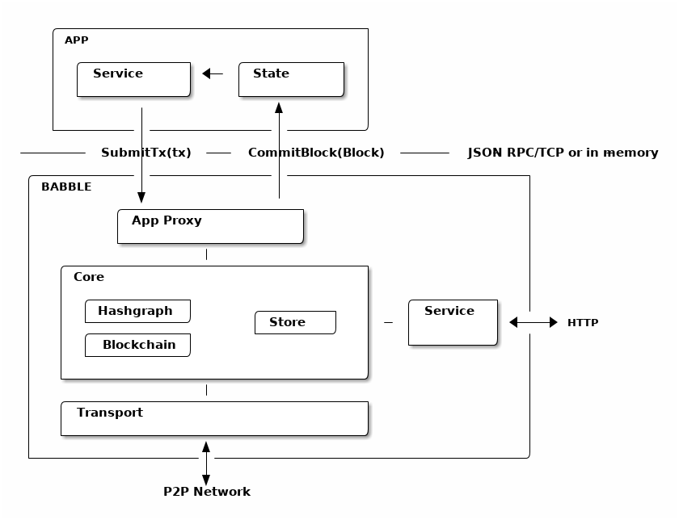

Design¶
Overview¶
{kind=link}
Almost any software application can be modeled in terms of a service and a state. The service is responsible for processing commands (ex. user input), while the state is responsible for manipulating and storing the data (eg. database). Usually, when commands require updating the data, the service will invoke the state directly. In a distributed application, however, commands (referred to as transactions in this context), must be broadcast to all replicas and put in a common order before being applied to the state. This ensures that all replicas process the same commands in the same order. Hence, the service no longer communicates directly with the state (except for read-only requests), but forwards commands to a transaction ordering system which takes care of broadcasting and ordering the transactions across all replicas before feeding them back to the application’s state.
Babble is an ordering system that plugs into any application thanks to a very simple interface. It uses a consensus algorithm to replicate and order the transactions, and a blockchain to represent the resulting list. A blockchain is a linear data structure composed of batches of transactions, hashed and signed together, allowing to easily verify any transaction. So, instead of applying commands directly to the state, Babble applications must forward the commands to Babble and let them be processed asynchronously by the consensus system before receiving them back, in blocks, ready to be applied to the state.
Note that it is left to the application layer to filter out bad transactions before relaying them from clients to the consensus engine. Unlike other middleware designed to sit in front of the application (like Apache or Tendermint), the user-facing API is app-specific, and Babble just takes care or managing the consensus “under the hood”. This filtering partially addresses spam from anonymous clients, but doesn’t protect against malicious nodes spamming the network; that is a potential enhancement on the roadmap.
Consensus and Blockchain¶
At the core of Babble is an algorithm insuring that all participants process the same transactions in the same order. We have chosen to implement a system suitable for the most adversarial conditions - with powerful attackers. This is known as Byzantine Fault Tolerance (BFT) and has been a field of research for over 30 years. Our system is based on our interpretation of a paper published by Leemon Baird in 2016 http://www.swirlds.com/downloads/SWIRLDS-TR-2016-01.pdf which describes a method for extracting a consensus order of events from a data structure representing the history of gossip between a set of participants. Instead of only gossiping transactions and exchanging votes directly, members gossip about gossip itself; something that can be represented in a Directed Acyclic Graph (DAG) - the hashgraph. The algorithm for extracting a consensus order from the hashgraph is proven to work and attains the theoretical limits of Byzantine fault-tolerance in terms of the number and power of the malicious members it can cope with. The messaging routines required to gossip and create the hashgraph are very simple compared to other BFT algorithms. The hashgraph itself, however, is not ideal for representing the ordered list of transactions because it is a two-dimensional object which doesn’t explicitly express a linear order of the items it contains. Hence, we developed a method to map the hashgraph onto a blockchain.
A blockchain is a data structure where transactions are packaged in hash-linked blocks. Each block is identified by a cryptographic hash and contains a hash of the previous block, so that blocks can form a chain from the first block ever to the last formed block. In this way, all the block - and transactions - are connected via a linear linked list structure. In our system, blocks contain a collection of signatures of their own hash from the participants. A block with valid signatures from at least one third of validators can be considered valid because - by hypothesis - at least one of those signatures is from an honest member.
Projecting the hashgraph onto a blockchain makes it much easier for third parties to verify the consensus order. It makes it possible to build light-clients and to integrate Hashgraph based systems with other blockchains. For more detail about the projection method, please refer to From Hashgraph to Blockchain
Proxy¶
Babble communicates with the App through an AppProxy interface, which has two implementations:
SocketProxy: A SocketProxy connects to an App via TCP sockets. It enables the application to run in a separate process or machine, and to be written in any programming language.InmemProxy: An InmemProxy uses native callback handlers to integrate Babble as a regular Go dependency.
The AppProxy interface exposes three methods for Babble to call the App:
CommitBlock(Block) ([]byte, error): Commits a block to the application and returns the resulting state hash.GetSnapshot(int) ([]byte, error): Gets the application snapshot corresponding to a particular block index.Restore([]byte) error: Restores the App state from a snapshot.
Reciprocally, AppProxy relays transactions from the App to Babble via a
native Go channel - SubmitCh - which ties into the application differently
depending on the type of proxy (Socket or Inmem).
Babble asynchronously processes transactions and eventually feeds them back to the App, in consensus order and bundled into blocks, with a CommitBlock call. Transactions are just raw bytes and Babble does not need to know what they represent. Therefore, encoding and decoding transactions is done by the App.
See the API section for more details about the Proxy API.
Transport¶
Babble nodes communicate with other Babble nodes in a fully connected Peer To Peer network. Nodes gossip by repeatedly choosing another node at random and telling eachother what they know about the hashgraph. The gossip protocol is extremely simple and serves the dual purpose of gossiping about transactions and about the gossip itself (the hashgraph). The hashgraph contains enough information to compute a consensus ordering of transactions.
The communication mechanism is a custom RPC protocol over TCP connections. It implements a Pull-Push gossip system. At the moment, there are two types of RPC commands: Sync and EagerSync. When node A wants to sync with node B, it sends a SyncRequest to B containing a description of what it knows about the hashgraph. B computes what it knows that A doesn’t know and returns a SyncResponse with the corresponding events in topological order. Upon receiving the SyncResponse, A updates its hashgraph accordingly and calculates the consensus order. Then, A sends an EagerSyncRequest to B with the Events that it knows and B doesn’t. Upon receiving the EagerSyncRequest, B updates its hashgraph and runs the consensus methods.
Core¶
The core of Babble is the component that maintains and computes the hashgraph. The consensus algorithm, invented by Leemon Baird, is best described in the white-paper and its accompanying document.
The hashgraph itself is a data structure that contains all the information about the history of the gossip and thereby grows and grows in size as gossip spreads. There are various strategies to keep the size of the hashgraph limited. In our implementation, the Hashgraph object has a dependency on a Store object which contains the actual data and is abstracted behind an interface.
There are currently two implementations of the Store interface. The
InmemStore uses a set of in-memory LRU caches which can be extended to
persist stale items to disk and the size of the LRU caches is configurable. The
BadgerStore is a wrapper around this cache that also persists objects to a
key-value store on disk. The database produced by the BadgerStore can be
reused to bootstrap a node back to a specific state.
Service¶
The Service exposes an HTTP API to query information about the state of the node as well as the underlying hashgraph and blockchain. At the moment, it services two queries:
[GET] /stats:
Returns a map with information about the Babble node.
$curl -s http://[ip]:80/stats | jq
{
"consensus_events": "145",
"consensus_transactions": "100",
"events_per_second": "0.00",
"id": "1",
"last_block_index": "4",
"last_consensus_round": "14",
"num_peers": "3",
"round_events": "18",
"rounds_per_second": "0.00",
"state": "Babbling",
"sync_rate": "1.00",
"transaction_pool": "0",
"undetermined_events": "22"
}
[GET] /block/{block_index}:
Returns the Block with the specified index, as stored by the Babble node.
$curl -s http://[ip]:80/block/0 | jq
{
"Body": {
"Index": 0,
"RoundReceived": 7,
"StateHash": "ib8wpBS/W18OT07R+HFxBVYjS/lwPPRtuAV/rcrpQ9w=",
"FrameHash": "T7EVNhAfbIx3jGyu5fXnyYs+eAihWCxFdu+8UDYOzfA=",
"Transactions": [
"Tm9kZTEgVHgx",
"Tm9kZTEgVHgy",
"Tm9kZTEgVHgz",
"Tm9kZTEgVHg0",
"Tm9kZTEgVHg1",
"Tm9kZTEgVHg2",
"Tm9kZTEgVHg3",
"Tm9kZTEgVHg4",
"Tm9kZTEgVHg5",
"Tm9kZTEgVHgxMA==",
"Tm9kZTEgVHgxOA==",
"Tm9kZTEgVHgxMQ==",
"Tm9kZTEgVHgxMg==",
"Tm9kZTEgVHgxMw==",
"Tm9kZTEgVHgxNA==",
"Tm9kZTEgVHgxNQ==",
"Tm9kZTEgVHgxNg==",
"Tm9kZTEgVHgxNw=="
]
},
"Signatures": {
"0x0442633367F4F3C3B00533956CF5231600EB5622765A064C0BFCC547611293F3353BE2404D01FBF66184DB486C92F50EA08CBA75268DDD29BDF8DA5DA333A2E3F5": "2a2wij946jjhb0nnqcqspk5m3irnw6pyqevsgl833urt453nwq|50npyfnd9c2whz8gqe3jv4ya1qu2if3s25qofuah8565auzpjq",
"0x04C1795E3C6C66CA3DF09C89FAC9FD5AC1BFF7C8BFE7D1DEF7CEC1A3BD9162F37CE841EE5ACE29B65486DD8EA976D5D7EDEF525C2AB6036CFFA5B8B259C2E29C54": "636m75hq7vmz66vgscosrvhv3ultq1ndh477h3hx8oa38qkxkm|611yf6veodg7kwedt99kuuftjzturj8sowu2c1b65e323umrsv",
"0x04C8754230AF8F4A3491E16B8508E7D4C6944E496C95E0F6CF2B21ABBDD7BF9768E3F63B63166CE20FF8B7AF8B29C576F138B696E55ADEE6B6B33889CDFD451CC8": "39u9n7nk31nsyjsnrclcvtgo2emx3hu8gpsvfdzy497bbwaoam|69sl3o2rvy9fqant3ui86pffqcdb6tofhp1padlc011oyu6o9v",
"0x04F753E04757A4D6ABC5741AC80D5CC98D5CE8F68C15104D73C447835D51A7840805614A221FD72C069C3D54E92FC8DC8301D1A9F789E347E7E1F5B63A6975582A": "1ajuve68asea9ydczz7j1vbi4p1rs4svzbyjwkxc0dswppmw7j|353mq56tycr44mmzzr5j5zs3mjwz74g5eladozhbwojfkkaf51"
}
}